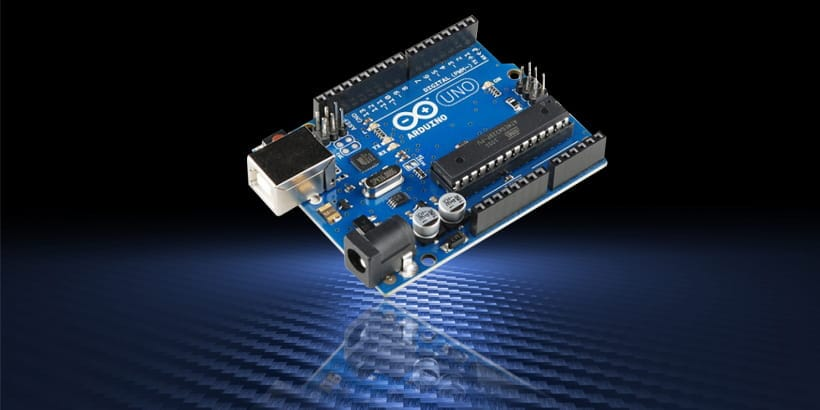
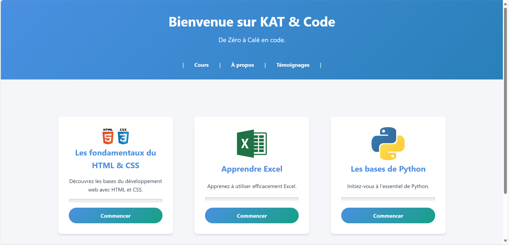

Portfolio
Me découvrir
Bonjour, je suis Antonin Mignot--Pilon, élève en deuxième année de classe préparatoire en informatique passionné par ce domaine depuis toujours ! Plus tard, j'aimerais devenir chef de projet, mais avant cela, débuter ma carrière comme developpeur afin d'agrandir ma palette de compétences serait une bonne option. Dans la vie, je me passionne pour le tennis et tout ce qui touche à la culture générale !
Télécharger mon CVMes Projets

Station météo - Système embarqué
Nous avons développé une station météo embarquée destinée aux navires de surveillance, capable de mesurer et d'enregistrer des paramètres environnementaux clés comme la température, l'humidité, la pression atmosphérique et la luminosité. Basée sur un microcontrôleur Arduino, elle intègre divers capteurs, un module de stockage sur carte SD et une horloge RTC pour l'horodatage des données. Conçue pour être modulaire et évolutive, cette solution assure une surveillance efficace et adaptable aux besoins météorologiques en milieu maritime.

Jeu de la vie - POO
Nous avons développé une implémentation en C++ du Jeu de la Vie de John Conway, en appliquant les principes de la programmation orientée objet. Le programme lit un fichier d'entrée définissant l'état initial d'une grille de cellules et simule leur évolution selon des règles prédéfinies. Il propose deux modes : une exécution en console, qui enregistre les résultats à chaque itération, et une interface graphique interactive développée avec la bibliothèque SFML.

Configuration d'un réseau - Réseau
Nous avons réalisé la conception et la configuration des réseaux de la ville de Funkytown à l'aide du logiciel Cisco Packet Tracer. Le projet consistait à mettre en place des architectures réseau pour différentes entreprises en respectant des cahiers des charges spécifiques, incluant la gestion de VLAN, le routage inter-VLAN, la configuration de serveurs DHCP et DNS, ainsi que la sécurisation des accès via SSH et WPA2. Nous avons utilisé des concepts avancés comme le VLSM, l'Etherchannel et l'adressage IPv6 pour assurer l'évolutivité des réseaux.

Site de recherche de stage - Web
Le projet consiste en la création d'une plateforme web de gestion des stages, permettant aux étudiants de rechercher et postuler à des offres, aux entreprises de publier des stages, et aux pilotes de promotion de suivre les candidatures. L'application repose sur une architecture MVC avec un backend en PHP et une base de données relationnelle. Elle inclut des fonctionnalités essentielles comme l'authentification, la gestion des entreprises et des offres, ainsi que le suivi des candidatures. Le site est responsive et sécurisé, avec une conformité aux bonnes pratiques de développement et une optimisation pour l'expérience utilisateur.

Projet personnel - Kat & code
Avec un groupe d'amis, nous avons décidé d'intervenir dans des lycées afin de faire découvrir l'informatique aux élèves. Notre objectif est de leur offrir un premier contact concret avec cette discipline, qui nous semble encore trop peu abordée dans leur parcours. En plus de nos interventions mensuelles, nous avons mis en place un site de cours en ligne, permettant aux lycéens de s'exercer et d'approfondir leurs connaissances entre chaque session.
Compétences